Project guide · for someone new to it
Receiving through a switching RIS: what we built and why
A time-modulated RIS flips its elements on and off inside every OFDM symbol. That smears each subcarrier's data onto its neighbours. Today's receivers treat the smear as noise. This project shows the smear is exactly predictable from the switching timing alone, and builds a receiver that undoes it.
The big picture
If you remember one paragraph, make it this one.
The project in four sentences
A reconfigurable intelligent surface (RIS) is a wall panel of tiny reflectors whose reflection can be changed electronically. When the panel is switched periodically during an OFDM symbol, each subcarrier's data leaks onto nearby subcarriers (the leaked copies are called harmonics). We proved that this leakage splits exactly into a part set only by the switching timing, which the receiver knows, and a part set by the propagation channel and the element's frequency behaviour, which the receiver can learn from two pilot symbols. With that split we built a receiver that estimates and undoes the leakage, gets within a fraction of a dB of perfect channel knowledge, and never forms the full channel matrix.
The work started as a short IEEE letter and is now a full journal paper (draft in paper/journal/, 54 pages, with the letter kept in paper/letter.tex). It builds directly on one recent paper, Iudice et al., September 2026, which modelled this leakage accurately but left the receiver side open. On 22 Oct an external review plan (workstreams A to K) was worked through; its results are in The external review.
How we got here
This project did not start here. It is the fourth idea in about two weeks, and each earlier one was dropped for a stated, tested reason. Knowing why helps you defend the current one.
Background, from zero
OFDM in one minute
Modern Wi-Fi and 5G split a wide channel into many narrow sub-channels called subcarriers. In our setup there are 3276 of them, spaced 30 kHz apart, covering about 98 MHz around 3.594 GHz (5G band n78). Each subcarrier carries one symbol (for example a 16-QAM point) per OFDM symbol period of about 33 µs.
The trick that makes OFDM simple: as long as the channel does not change during a symbol, every subcarrier stays separate. The receiver then needs just one complex number per subcarrier (a "one-tap equaliser") to undo the channel. A short copy of the symbol's end, the cyclic prefix (CP), is added at the front to absorb echoes.
RIS in one minute
A RIS is a flat panel of many small elements, each able to reflect an incoming wave with a controllable phase. In our model each element has two electrical states (two bias voltages on a varactor diode). It works like a mirror whose tilt you can set electronically, used to steer signal around blockages.
What "time-modulated" adds
A normal RIS holds its setting for many symbols. A time-modulated RIS switches each element between its two states several times within every OFDM symbol, following a short repeating pattern. We use K = 8 slots per symbol. A "duty 0.75" pattern means 6 slots in state 1 and 2 slots in state 2. People do this deliberately for physical-layer security (scrambling the signal for anyone not at the intended spot), for sensing, and for serving several users.
Why switching smears subcarriers
Switching a reflection on and off is multiplication by a square wave. Multiplying by any periodic waveform creates copies of the signal shifted in frequency by multiples of the waveform's repetition rate. Here the pattern repeats once per OFDM symbol, so the copies land exactly on neighbouring subcarriers. Each copy is a harmonic, indexed by h: h = 0 is the unshifted signal, h = +1 lands one subcarrier up, and so on.
The element is not a perfect switch (dispersion)
Each element is a small resonant circuit, so its reflection depends on frequency. Across our 98 MHz band its phase drifts by about 47° and its strength by about 0.6 dB. Iudice et al. measured and modelled this. The consequence: the leakage pattern is slightly different at each subcarrier, so the neat "same pattern everywhere" (Toeplitz) shape that older papers assume is broken.
The system
Three parties: a transmitter (base station) sending OFDM, the time-modulated RIS with a controller that runs the switching pattern, and the receiver we designed. The direct path is blocked, so everything arrives via the RIS.
The numbers behind the simulation
| Quantity | Value | Where it comes from |
|---|---|---|
| Carrier, band | 3.594 GHz, 98.3 MHz | 5G band n78, as in Iudice et al. |
| Subcarriers | 256 for most tests; 3276 for the full band | 30 kHz spacing |
| RIS elements | 16 (4 × 4 grid, half-wavelength spacing) | our choice, kept small for speed |
| Switching | 8 slots per symbol, duty 0.5 to 0.875 | our choice |
| Element model | two resonances, 3.471 and 3.710 GHz | Iudice et al., Table I (OpenRIS cell) |
| Channel | Rician K = 10 dB, 5 scattered paths, 30 ns delay spread per hop | physically consistent: all elements share paths |
| Pilots | 2 OFDM symbols (sometimes 1 or 4) | the budget our estimator must work with |
The core idea
Everything the receiver sees is captured by one equation. After the FFT, the received subcarriers y relate to the sent symbols x through a matrix H:
With a normal RIS, H is diagonal and one tap per subcarrier is enough. With a time-modulated RIS, H has many off-diagonals, one per harmonic. For our 3276 subcarriers that is a 3276 × 3276 complex matrix, about 170 MB, and it changes with every channel.
The key fact (Lemma 1 in the draft)
The harmonic term splits exactly into two factors:
- T_q,s[h] depends only on when element q is in state s. The receiver knows this exactly. It depends on h alone, so it forms a Toeplitz matrix, which can be applied with an FFT.
- Γ_s(f) is the element's frequency response in state s. It multiplies only the incoming side, so it merges with the unknown channel A_s and can be learned from pilots like any other channel.
The proof is one line: a pattern that is constant inside each slot has a Fourier series that you can group by state.
Three useful consequences follow, and each became part of the receiver:
- No element model is needed. The receiver only needs the switching timing; the element's dispersion is learned. This turned out to matter a lot (see the mismatch results).
- Fast products. Multiplying
Hby a vector becomes 2 FFT convolutions per element: cost grows as Q·M·log M instead of M². - The tail is real. Harmonic energy falls off only as 1/h². Any method that keeps a handful of neighbours misses several percent of the energy and hits an error floor.
The receiver we built
Read the flowchart top to bottom. The left branch is channel estimation (once per channel coherence time), the right branch is detecting data.
flowchart TD A["Received OFDM symbols
(after FFT)"] --> B{"Pilot or data?"} B -->|"2 pilot symbols"| C["Build regressors from the
known switching timing T_s
(FFT convolutions)"] C --> D["Delay-limited basis per hop
(DPSS / Slepian functions)"] D --> E["LMMSE estimate with low-rank
two-hop structure
C = U Vᵀ or a_q = U α_q, s_q = V β_q"] E --> F["Estimated channel factors
(never the full matrix)"] B -->|"data symbols"| G["Conjugate-gradient MMSE
using the fast operator
(about 20 to 25 iterations)"] F --> G G --> H["Symbol decisions
(QPSK / 16-QAM / 64-QAM)"] H -.->|"optional: decided symbols
as extra pilots (1 pass)"| E
The estimator, step by step
- Delay-limited basis. Each hop's frequency response comes from echoes that arrive within a fraction of a microsecond. Such responses are smooth across subcarriers and can be written with a few DPSS (Slepian) basis vectors instead of 3276 numbers.
- Low-rank two-hop structure. All 16 elements see the same few propagation paths. So the combined two-hop channel is low-rank: it can be written as U Vᵀ with rank about 6. That cut the full-band estimation error from −26 dB to −39 dB.
- LMMSE with a prior. Instead of plain least squares, the estimate is weighted by how much energy each basis vector is expected to carry. This stops noise from being amplified when the basis is larger than needed.
- Per-element patterns. When each element has its own shifted pattern (common in security designs), each element's two hop responses are estimated as factors on a shared path subspace, by alternating least squares.
The equaliser
The best linear receiver (MMSE) solves (Hᴴ H + σ² I) x̂ = Hᴴ y. Solving it directly needs the whole matrix and M³ operations. Conjugate gradient (CG) solves it iteratively, using only "multiply by H" and "multiply by Hᴴ", which Lemma 1 makes cheap. After 20 iterations its error rate matches the direct solve.
How we worked
After two dead ends that were only found late, every step of this project followed one rule: write the pass/fail test before running the experiment, and stop if it fails.
flowchart LR N["Novelty check
(read papers, search)"] --> P["Write prediction and
kill criterion"] P --> S["Run smallest test
that can fail"] S --> J{"Passed?"} J -->|"yes"| R["Record in README
with numbers"] R --> X["Next gate"] J -->|"no"| D{"Diagnose:
bug, wrong model,
or real limit?"} D -->|"fixable, same bar"| S D -->|"real limit"| K["Stop or narrow the claim,
and record why"]
What has been done
| Gate | Question | Result | Status |
|---|---|---|---|
| 0 | Has anyone estimated or equalised this channel at the receiver? | No. Closest work treats the leakage as noise, or is a blind eavesdropper attack that assumes the ideal Toeplitz shape. | passed |
| 1 | Does our model reproduce Iudice et al.? | Their dispersion numbers match (172 to 184° vs 180 ± 6.5°; ±0.57 dB vs <0.75 dB). An independent time-domain simulation agrees to 0.3 to 0.5%. | passed |
| 2 | Does joint equalisation gain what theory predicts? | Energy-collection gain matches 1/(2D−1)² within 0.1 to 0.4 dB (e.g. 5.9 vs 6.0 dB at duty 0.75). | passed |
| 3 | Can 2 pilot symbols get within ~1 dB of perfect knowledge? | Yes for physical channels at 10, 20 and 30 dB. One marginal miss (1.2 dB) in a non-physical channel model. | passed |
| Full band | Does it scale to 3276 subcarriers without the full matrix? | Yes, for identical and for per-element patterns, using only the switching timing. The per-element case first failed, then passed once the cyclic-shift structure was used (−34 dB, error rate within 1.1× of perfect). | passed |
| Literature | Does it beat the standard estimators from earlier papers? | Yes, by a wide margin (table below), and still yes in the stricter review rerun, where every competitor got a robust equaliser and the strongest ideal-element estimator was added (review table). | passed |
Today's receiver against ours
Rates in bit/s/Hz per subcarrier. The "designed" rows are the fairest test: the RIS pattern is chosen to favour the conventional receiver.
| Setting | Conventional one-tap | Ours, 2 pilots | Ours, perfect channel |
|---|---|---|---|
| Duty 0.875, designed for user, 10 dB | 2.51 | 3.13 | 3.23 |
| Duty 0.875, designed for user, 20 dB | 3.34 | 6.18 | 6.37 |
| Duty 0.875, designed for user, 30 dB | 3.47 | 9.37 | 9.67 |
| Duty 0.75, generic user, 20 dB | 0.19 | 4.77 | 4.93 |
The conventional receiver stops improving once noise is small, because the leakage it ignores becomes the limit. Ours keeps improving. At 10 dB the advantage is modest (about 2 dB); at 20 to 30 dB it is large.
Knowing the element model, or not
Loss in dB against perfect channel knowledge, identical patterns, at 20 dB / 30 dB SNR.
| What the receiver assumes about the element | Loss |
|---|---|
| Exact model | 0.05 / 0.12 |
| Model with resonance off by 10 MHz | 0.66 / 3.36 |
| Ideal ±1 switch (what earlier papers assume) | 1.41 / 6.57 |
| No model, timing only | 0.08 / 0.11 |
This is the most important practical result: the receiver needs only the switching timing. (These rows used two refinement passes. The review re-tested the claim on data not generated by our own model: an independent time-domain simulation, element switching transients and four kinds of model mismatch; the loss stayed within 0.05 bit/s/Hz in every case.)
Error rates at the full band (3276 subcarriers, identical patterns)
| Setting | One-tap | Perfect channel | Ours, 2 pilots | Ours + 1 refinement |
|---|---|---|---|---|
| 20 dB, 16-QAM (symbol error rate) | 0.84 | 0.031 | 0.034 | 0.033 |
| 28 dB, 64-QAM (symbol error rate) | 0.96 | 0.027 | 0.037 | 0.031 |
30 channels (review rerun; the first version used 10). As a ratio to the perfect-channel error rate, with 95% bootstrap intervals: ours 1.10× [1.06, 1.15] at 20 dB and 1.37× [1.18, 1.86] at 28 dB from pilots alone; 1.05× and 1.12× after one refinement pass. The basis-expansion estimator is 18× and 32× worse than perfect.
Against the estimators used in earlier papers
Same pilots and same random channels for everyone, 20 trials, 256 subcarriers. The basis-expansion model (CE-BEM) is the standard way to estimate a channel that changes inside one OFDM symbol; we gave it the same prior as ours so the comparison is fair to it. Rates in bit/s/Hz with 2 pilot symbols.
| Estimator | 20 dB | 30 dB |
|---|---|---|
| Conventional one-tap | 0.42 | 0.43 |
| Toeplitz mixing model (earlier security papers) | 2.27 | 1.42 |
| Basis-expansion model, 25 harmonics | 2.20 | 1.08 |
| Ours, timing only | 6.52 | 9.68 |
| Perfect channel knowledge | 6.61 | 9.92 |
With 25 harmonics the basis-expansion estimator barely improves with more pilots (2.32 with 8 pilots), because the slow 1/h² harmonic tail falls outside that set. Keeping all 511 harmonics fixes that only with many more pilots: with 32 pilot symbols it reaches 6.18 and 9.37 bit/s/Hz, close to ours. So the fair claim is: ours with 2 pilots beats full-harmonic BEM with 32 pilots, which itself still falls 0.4–0.5 bit/s/Hz short of perfect knowledge; at 2 pilots full BEM collapses to 0.13. At the full band it misses 57 to 88% of symbols. The review reran this whole comparison under stricter rules (30 channels, a 3GPP channel as well, a robust equaliser for everyone, and a much stronger ideal-element competitor); see the fair comparison.
Supporting results
- Exact fast operator. Matches the full matrix to 7 × 10⁻¹⁶. 20 CG iterations give the same symbol error rate as the direct solve. Written element by element it was 3.4× slower than the dense solve in MATLAB (week 8, bar failed); written with one shared FFT per state and a stopping rule it is 2.6× faster at the full band for a block of 12 symbols, and the dense solve no longer fits in memory at twice that size (Fig. 22). The review added two caveats: the stopping tolerance must be 3·10⁻³, not 10⁻², at large bands; and if the dense matrix is factored once and reused over many symbols, it may win for long blocks (this timing is being re-measured).
Week 8: attacking the remaining limitations
Each attempt had its pass/fail bar written into the README before running. Failures stay recorded.
| Limitation | What we tried | Result |
|---|---|---|
| Receiver must be told the RIS timing (~10 ns at 30 dB) | A wider delay window (failed: worse than nothing). Then: choose the offset by the Bayesian evidence of the first-stage model, not by how well it fits the pilots | removed 0.40 dB loss vs 0.41 dB with the offset known, at 30 dB, from 2 pilots (Fig. 20). The review redid this with physically derived offsets and also lets the evidence pick where the delay window starts (see review) |
| Fast equaliser only shown by operation count | Measured wall-clock; then a batched operator with a stopping rule | passed on the second attempt: 2.6× faster than dense at 3276 subcarriers (Fig. 22) |
| Full-band update cost extrapolated | Measured warm-start updates at 3276 subcarriers, user at 30 km/h | passed 1.4 s vs 12.5 s per update (8.6×), same accuracy (Fig. 22) |
| 300 ns delay spread | Learn the static base-station→RIS side once from many frames; each new frame then estimates only the user side (a known idea for ordinary RIS, applied here) | withdrawn Seemed to pass on TDL-A and TDL-C (gap 0.23 and 0.26 at 20 dB), but the review found that every 300 ns case has combined echoes far longer than the cyclic prefix, which the simulator did not model. No longer a claim (Fig. 21 kept as a record) |
| Fast vehicles (120 km/h) | Decision-directed tracking, then a proper Kalman filter | failed both: wrong decisions pile up after ~10 symbols, and at 30 dB the Doppler mixing inside each symbol (not in our model) sets a floor. Stays a stated limitation |
How long do we treat the channel as constant, and why?
In the core results (gates 1 to 3, full band, baselines, coded results) the channel is held fixed over the pilots and the data of one block ("block fading"), exactly as in the anchor paper, which assumes a static geometry. This is deliberate: it isolates the new effect (leakage between subcarriers caused by the switching) from a second, unrelated effect (Doppler). It is justified when the coherence time, the time over which the channel stays roughly the same, is much longer than a block. The switching repeats every 33 μs, one OFDM symbol, while a walking user's channel stays the same for about 42 ms, over 1000 symbols.
Then we tested the assumption (week 5, Fig. 11, and week 8, Fig. 19): only the RIS→user hop moves; each path rotates with its own Doppler shift, including the small mixing inside one symbol. The coherence time Tc ≈ 0.42 / fD:
| Speed | Doppler fD | Tc | In OFDM symbols | Best refresh, 3GPP TDL at 20 dB (Fig. 19) |
|---|---|---|---|---|
| 3 km/h (walking) | 10 Hz | 42 ms | ~1190 | 4 pilot symbols every 60–80 symbols (5–7% overhead) |
| 30 km/h (urban car) | 100 Hz | 4.2 ms | ~119 | 1 pilot every 10–20 symbols (5–10%) |
| 120 km/h (highway) | 400 Hz | 1.1 ms | ~30 | 1 pilot every 8 symbols (12%) |
So the answer is: we hold the channel constant for one block, and the block length the receiver can afford is set by speed. With common-phase tracking (as 5G's phase-tracking pilots do) the refresh interval is a fraction of the coherence time: about 1/15 of it when walking, 1/6 to 1/12 at 30 km/h, and 1/4 at 120 km/h, where every symbol counts. Without that tracking the refresh must be about twice as frequent (Fig. 19, shaded band). The baseline experiments with fixed channels correspond to the walking case. One caution found in week 8: the rate metric used in week 5 quietly assumed the receiver tracks each subcarrier's phase, which is optimistic; week 8 replaced it with the realistic common-phase version, and the table above uses that.
The external review (22–23 Oct)
On 22 Oct an outside review plan listed what a journal referee would attack, in eleven workstreams (A to K). We worked through it with stricter rules than before:
- every test was written into
results/PREREG_LOG.md, with the date and git version, before it ran; - at least 30 random channels per point, compared in pairs (same channel, two methods) with 95% confidence intervals;
- settings were chosen on one set of channels and reported on a different set;
- no result file was overwritten, and failures were reported as failures.
Every claim is tracked in results/CLAIMS_LEDGER.md; every wording that had to change is listed in results/SOFTENED_CLAIMS.md; each workstream has a results/SUMMARY_*.md.
The outcome in three sentences
The core claims survived: the receiver needs only the switching timing, beats every competitor we could build on every channel, and finds the RIS clock offset by itself. Several numbers and explanations were wrong or too strong and are now corrected; one result (the 300 ns learning) is withdrawn. The paper's motivation changed: time modulation costs the legitimate user rate, and our receiver wins most of it back. It does not make a switching RIS better than a well-set static one for a single user.
| Workstream | Question a referee would ask | What we found | Status |
|---|---|---|---|
| A. Inverse crime | Does the estimator only work because the test data come from its own model? | No. On an independent time-domain simulation, with element switching transients, and under four kinds of model mismatch (changing the channel by up to 40%) the extra loss stayed within 0.05 bit/s/Hz. | passed |
| B. Timing | Is the clock-offset story physical, and is the evidence really needed? | Physical: if the RIS follows the incoming signal the offsets cancel; if it follows the base-station clock, the offset is exactly minus the BS→RIS delay (checked to 7·10⁻¹⁵). The evidence then finds it within 0.03 bit/s/Hz of knowing it. Our old claim that searching by pilot fit "cannot" work was false with a fine grid; the evidence is needed with a single pilot symbol (pilot fit loses 1.5 to 2.8 bit/s/Hz there) and is 5 to 58× cheaper otherwise. | revised |
| B. Delay window | What if the receiver's timing reference is off? | A fixed window failed when it started after the reference. Fixed by letting the evidence choose the window start together with the offset: within 0.05 bit/s/Hz of perfect sync. | fixed |
| C. Fair baselines | Were the competitors handicapped? | Partly, yes: they had a naive equaliser and a weak ideal-element model. Rerun with a robust equaliser for all, basis expansion with no harmonic limit, and a strong ideal-element estimator: ours still wins everywhere (table). | passed |
| C. Ablation | Which step of the receiver does the work? | The first, linear stage does most of it. A "fallback" step (keep the linear estimate if it fits the pilots better) turned out to be an overfitting trap on 3GPP channels and was removed after a fresh test: never worse, up to 0.25 bit/s/Hz better. | changed |
| C. Fitting the element | Would fitting a 6-parameter element model beat "timing only"? | No: slightly worse with the right model family, and it fails when elements differ from each other. | passed |
| C. Switching edges | Do competitors fail only because the edges are perfectly sharp? | Partly. With a slow ramp (0.3 slot) the basis expansion gets close to ours (8.2 vs 8.56); for realistic fast edges our lead is over 4 bit/s/Hz. | stated |
| D. Channels | Are the 3GPP results valid, and is the model spatially realistic? | All 100 ns cases fit inside the cyclic prefix; all 300 ns cases do not, so those results are withdrawn. The spatially consistent 3GPP CDL model gives the same results as TDL. The low-rank property is strong for large surfaces (rank about 16 of 1024 elements) and weak for 16 elements (about 5 of 16). | mixed |
| E. Pilot overhead | Were the best settings picked on the test channels? | Yes, they were. Redone: chosen on 20 channels, reported on 20 others. Shared-path channel finished (table); 3GPP channels finishing. | running |
| F. Statistics | Are the error-rate claims based on enough data? | Full band: 30 channels (ratios above). Coded: 2000 blocks per point; the gap to perfect knowledge is 0.14 dB [0.09, 0.20], smaller than the 0.4 dB we had from 120 blocks. | fixed |
| G. Theory | Why do two pilot symbols suffice? | The prior leaves only 19 to 33 effective unknowns, against 256 to 2048 observations. Our error is 2.5 to 6.5 dB above the theoretical bound for the assumed prior, because the real channels do not follow that prior exactly. | added |
| H. Speed | Is the fast equaliser really faster? | The tolerance must be 3·10⁻³ (10⁻² gives 1.15× the error rate at the full band); the paper now uses that. The timing against a dense solver factored once and reused is being re-measured on an idle machine. | running |
| I. Motivation | Does any of this help the user? | Honest answer below. Time modulation costs the user rate; ours recovers it to within 0.1–0.2 of perfect knowledge (+2.1 to 2.3 bit/s/Hz over today's receiver at 20 dB). | reframed |
| J. Novelty | Has someone done it already? | Fifth search, 13 closest works compared one by one: no receiver for this channel exists. Wording softened to "to our knowledge, the first pilot-based receiver". | passed |
| K. Hardware | Realistic edges, emission, real hardware? | Rise times up to 42 ns need no calibration. Out-of-band emission with ideal edges (36.8 dB ACLR) misses the 45 dB requirement; slightly slower edges fix it (52.7 dB at 0.05 slot). No over-the-air test (stated as the main limitation). | partly |
The fair comparison (30 channels, robust equaliser for everyone)
Loss against perfect channel knowledge in bit/s/Hz (smaller is better), with 2 / 8 / 32 pilot symbols, at 20 dB. "Ideal-element estimator" is new: it uses the same prior as ours but assumes the textbook ±1 element. It is the strongest competitor.
| Estimator | Shared-path channel | 3GPP TDL-C, 100 ns |
|---|---|---|
| Today's one-tap receiver | 6.19 / 6.19 / 6.19 | 5.79 / 5.79 / 5.79 |
| Ideal-element estimator (our prior) | 0.48 / 0.44 / 0.43 | 0.85 / 0.50 / 0.41 |
| Basis expansion, all harmonics | – / 3.42 / 0.43 | – / 5.58 / 1.17 |
| Sparse recovery (OMP) | 4.16 / 3.13 / 2.92 | 4.13 / 2.90 / 2.59 |
| Ours, timing only | 0.07 / 0.01 / 0.00 | 0.52 / 0.08 / 0.02 |
How to read it:
- Pilots needed. Only ours gets within 0.3 bit/s/Hz of perfect knowledge with 32 pilot symbols or fewer: it needs 2 on the shared-path channel and 4 on TDL-C. So the claim "two pilots" is now stated per channel.
- The ideal-element estimator. It is good at 20 dB (0.4–0.5 short) but 2.0–2.3 short at 30 dB, and more pilots do not help it. That is the signature of a model error, not a noise error: at high SNR, ignoring the element's real behaviour becomes the main error. This is the cleanest evidence yet for "timing only".
- The margin. Compared, channel by channel, with the best competitor for that channel, ours is ahead by 0.3–0.4 bit/s/Hz at 20 dB and 0.5–2.2 at 30 dB, at every pilot count from 2 to 32. Every interval excludes zero.
- One sanity check failed, and the paper says so. A truncated basis expansion still gets slightly worse from 20 to 30 dB even with the ideal (oracle) robust equaliser. A single error-power number cannot describe an error concentrated on the missing harmonics.
Pilot overhead, chosen on one set of channels and reported on another
Net throughput after paying for pilots, in bit/s/Hz, shared-path channel, 20 held-out channels, common-phase tracking. In brackets: pilot symbols / block length chosen on the selection channels. The 3GPP TDL-A, C and D runs are still finishing; their numbers will replace the guide's and the paper's older "3.9–5.7 bit/s/Hz".
| Speed | SNR | Ours | Best basis expansion | Ours minus it | Perfect, no pilots |
|---|---|---|---|---|---|
| 3 km/h | 20 dB | 6.24 ± 0.24 (2/120) | 5.24 (32/320) | 1.01 ± 0.14 | 6.71 |
| 3 km/h | 30 dB | 8.99 ± 0.51 (2/60) | 7.34 (32/320) | 1.65 ± 0.34 | 10.02 |
| 30 km/h | 20 dB | 5.97 ± 0.37 (1/30) | 4.40 (16/320) | 1.57 ± 0.30 | 6.61 |
| 30 km/h | 30 dB | 8.56 ± 0.48 (1/15) | 5.42 (16/320) | 3.14 ± 0.40 | 9.90 |
| 120 km/h | 20 dB | 5.26 ± 0.59 (1/15) | 3.15 (16/320) | 2.11 ± 0.30 | 6.46 |
| 120 km/h | 30 dB | 7.30 ± 0.87 (1/10) | 3.38 (16/320) | 3.92 ± 0.53 | 9.74 |
Picking the settings on the reported channels themselves gave the same numbers within 0.04, so the earlier selection on the test channels inflated very little. The basis expansion here had no harmonic limit, unlike in the older table.
Does time modulation help the user? The honest answer
All at the same transmit power and noise, 20 dB, 30 channels (bit/s/Hz). Duty is the fraction of each symbol an element spends in its main state.
| Setup | Duty 0.625 | Duty 0.75 | Duty 0.875 |
|---|---|---|---|
| Static RIS, phases optimised for this user | 6.66 | ||
| Switching RIS, today's one-tap receiver | 0.68 | 1.98 | 3.15 |
| Switching RIS, ours (4 pilots) | 2.98 | 4.06 | 5.35 |
| Switching RIS, perfect knowledge | 3.08 | 4.18 | 5.50 |
What this means for the paper
Switching the RIS is done for other reasons: security, steering harmonics to other users, sensing. For the legitimate user it is a cost. Our receiver recovers almost all of what can be recovered (within 0.1–0.2 of perfect knowledge), but a static RIS set for that one user still does better. The paper now says exactly this.
Security, too, has a caveat: an eavesdropper with a generic basis-expansion receiver already gets 1.8–2.2 bit/s/Hz, and 2.5–3.0 if it knows the switching pattern. Keeping the pattern secret matters.
What changed in the paper
- Algorithm 1 has no fallback step; Algorithm 2 chooses the delay-window start with the offset; Algorithm 5's tolerance is 3·10⁻³.
- New: a physical-timing proposition, degrees-of-freedom and error-bound analysis, a full fair-baseline table, a motivation and secrecy section, CDL and rank results, emission (ACLR), realistic rise times, and the timing-regime comparison.
- Corrected numbers: coded gap 0.14 dB, full-band ratios 1.10× / 1.37×, overhead margins, the reason banded equalisers fail.
- Narrowed: "two pilots" is per channel (2 shared-path, 4–8 TDL-C), "first receiver" became "to our knowledge, the first pilot-based receiver", and "residual search cannot" was removed.
- Withdrawn: the 300 ns two-timescale results.
Figures, and how to read them
All twenty-six figures of the project, in reading order: first the physics, then the system, then the results. Each one comes with what it shows, how to read it, and what to conclude. Every figure is drawn by tm_ris_ofdm/figures/make_figures.py from saved results, so the numbers here are the same as in the README.
Colours are the same in every figure
Blue is always our receiver. Orange is the basis-expansion estimator (CE-BEM) from earlier papers. Green is the Toeplitz model from earlier security papers. Grey is the conventional one-tap receiver. Black dashed is perfect channel knowledge, the best possible.
Fig. AThe element is not a perfect switch
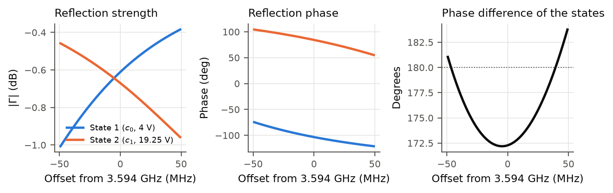
What it shows
How one RIS element reflects in each of its two states across our 98 MHz band, computed from the element model published by Iudice et al. (their Table I).
How to read it
- Left: strength in dB. 0 dB would be a perfect mirror; the element loses 0.4 to 1.0 dB and the loss changes with frequency.
- Middle: the phase of each state drifts by about 47° and 49° across the band.
- Right: the difference between the two states. An ideal on/off switch would sit flat on the dotted 180° line.
What to take away
- The difference wanders between about 172° and 184°, so the element behaves slightly differently on every subcarrier.
- That is why the old 'same leakage everywhere' (Toeplitz) assumption is wrong, and why our receiver must not rely on it.
- These curves match the paper's published numbers; this was our first check (Gate 1).
Fig. BWhere one subcarrier's energy lands
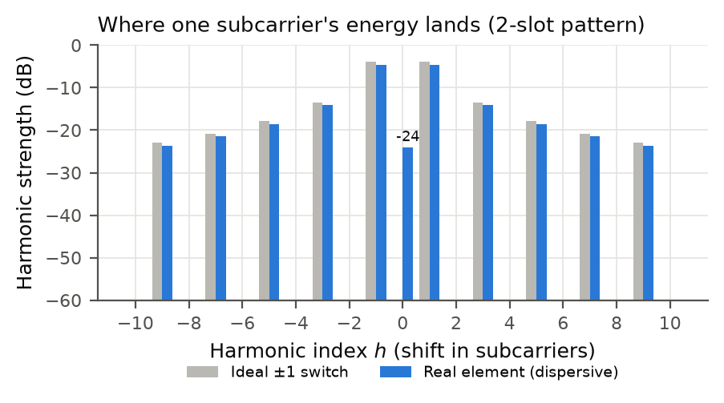
What it shows
Send energy on one subcarrier through an element switching with a 2-slot pattern, and measure how much arrives on each nearby subcarrier. Harmonic h means h subcarriers away.
How to read it
- Grey bars: an ideal ±1 switch. Blue bars: the real element.
- Taller bars mean more energy. 0 dB is all of it; −20 dB is 1%.
- Look at h = 0, the subcarrier the data was actually sent on.
What to take away
- Almost nothing stays home: the biggest copies land one subcarrier away on each side (about −4 dB each).
- The ideal switch puts exactly zero energy at h = 0; the real element leaks −24 dB there purely because of dispersion.
- The copies fade slowly with distance (as 1/h²), so a receiver that only looks at near neighbours misses part of the energy.
Fig. CJoint equalisation collects the energy that one-tap throws away
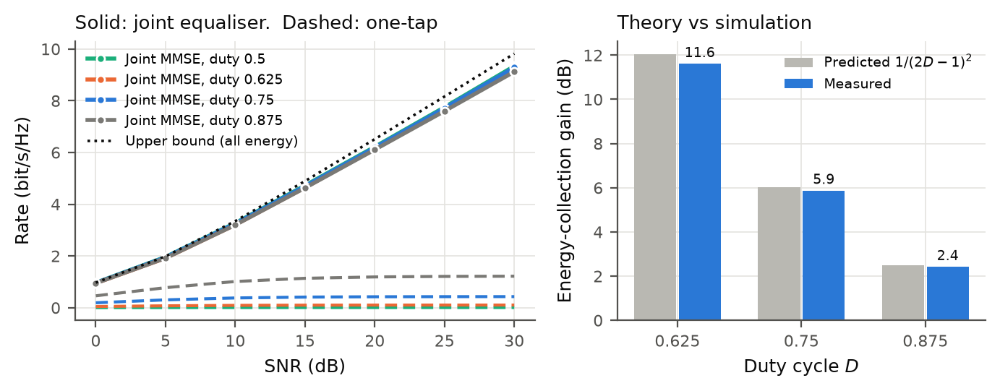
What it shows
The second check (Gate 2), assuming the receiver knows the channel perfectly: how much better a joint equaliser does than today's one-tap receiver, and whether that matches a formula we wrote down before running it.
How to read it
- Left: solid lines rise with SNR; dashed lines stay flat near the bottom.
- The dotted line is the best possible (all leaked energy collected).
- Right: grey bars are the prediction 1/(2D−1)², blue bars the simulation.
What to take away
- One-tap stays below about 1.2 bit/s/Hz at any SNR, because the leakage it ignores never goes away.
- Joint equalisation nearly reaches the upper bound at every duty cycle.
- Measured gains (11.6, 5.9, 2.4 dB) match the prediction (12.0, 6.0, 2.5 dB) within 0.4 dB, so the simulation behaves as theory says.
Fig. 0System model
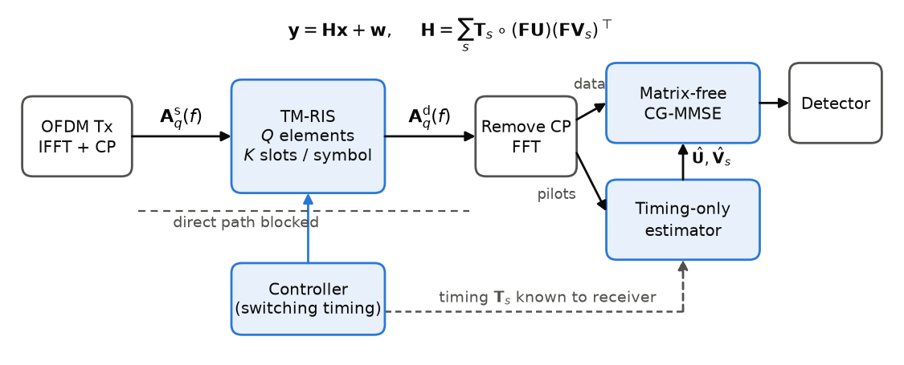
What it shows
The whole system as one block diagram, and the single equation the receiver works with. Blue boxes are the parts this project contributes or depends on.
How to read it
- Follow the solid arrows left to right: signal from the transmitter, through the switching RIS, into the receiver.
- Pilots go to the estimator; data goes to the equaliser, which uses the estimate.
- The dashed grey line is information, not signal: the switching timing is shared with the receiver.
What to take away
- The receiver needs the switching timing, but not a model of the element.
- It never builds the full channel matrix H: it keeps small factors U and V and applies H through FFTs.
- This is the figure to put first in the paper.
Fig. 6How accurately each method estimates the channel
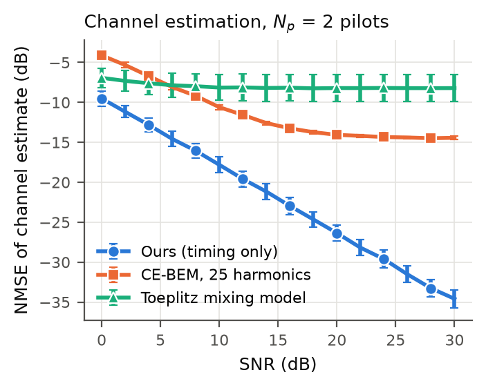
What it shows
Channel-estimation error (NMSE) against SNR, all methods using the same 2 pilot symbols. Lower is better; −30 dB means the error energy is one-thousandth of the channel energy.
How to read it
- Each step down by 10 dB means the error is 10× smaller.
- A line that keeps falling is limited only by noise. A line that flattens has hit a modelling error that more signal cannot fix.
- Error bars are 95% confidence intervals over 30 random channels.
What to take away
- Ours keeps improving, from −9.5 dB at 0 dB SNR to −34.6 dB at 30 dB.
- The literature's estimator (CE-BEM) flattens at about −14 dB and the Toeplitz model at about −8 dB: their models of the channel are wrong, so more pilots or power do not help.
- This is the clearest single picture of why the structure matters.
Fig. 7Bit error rate of each receiver
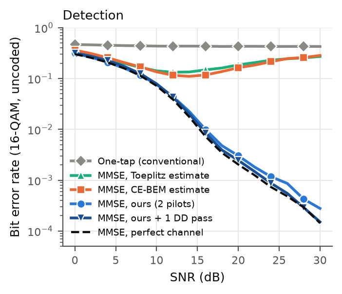
What it shows
Bit error rate (BER) against SNR for 16-QAM without channel coding, for six receivers, about 600,000 bits per point. Lower is better.
How to read it
- The vertical axis is logarithmic: each grid line is 10× fewer errors.
- The black dashed line uses the true channel, the best any linear receiver could do.
- Compare each curve to that line.
What to take away
- Ours (blue) sits almost on the perfect-channel line: 3.0×10⁻³ against 2.0×10⁻³ at 20 dB, and the refinement pass brings it closer.
- Receivers built on the old estimators get worse above about 13 dB (0.16 to 0.28): an equaliser that trusts a wrong model amplifies its mistakes.
- The one-tap receiver stays near 0.43, close to guessing.
- Even the perfect channel only reaches about 10⁻⁴ at 30 dB: that is normal for uncoded 16-QAM over a fading channel, not a weakness of our receiver.
Fig. 8What the received symbols look like
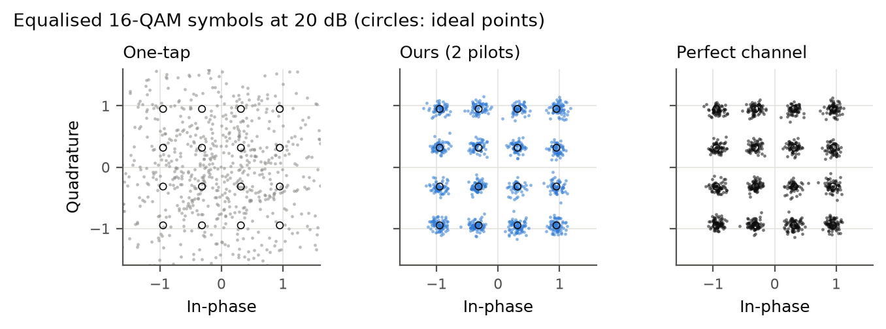
What it shows
The received 16-QAM symbols after equalisation at 20 dB, plotted on the complex plane. Black circles mark the 16 points the transmitter actually sends.
How to read it
- Each dot is one received symbol.
- A tight cloud around each circle means the symbol will be detected correctly.
- Dots spread between circles mean errors.
What to take away
- One-tap: the dots form a shapeless cloud, because the leaked neighbours land on top of every symbol.
- Ours: 16 tight clusters, visually the same as the perfect-channel panel.
- This is the intuitive picture behind Fig. 7.
Fig. 1Rate against pilot budget
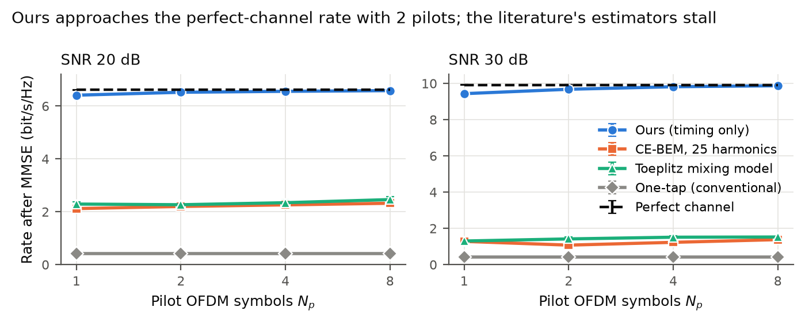
What it shows
Achievable rate after equalisation as the number of pilot symbols grows from 1 to 8, at 20 and 30 dB SNR.
How to read it
- Higher is better. The black dashed line is perfect channel knowledge.
- A method that needs many pilots would start low on the left and climb.
- Error bars: 95% confidence over 20 channels (most are smaller than the markers).
What to take away
- Ours is essentially at the perfect line from 2 pilots: 6.52 against 6.61 bit/s/Hz at 20 dB, 9.68 against 9.92 at 30 dB.
- The literature's estimators stay at 1 to 2.5 bit/s/Hz even with 8 pilots, so the gap is not a pilot shortage.
- Two pilot symbols are a small overhead in a real frame.
Fig. 2Does the receiver need to know the element?
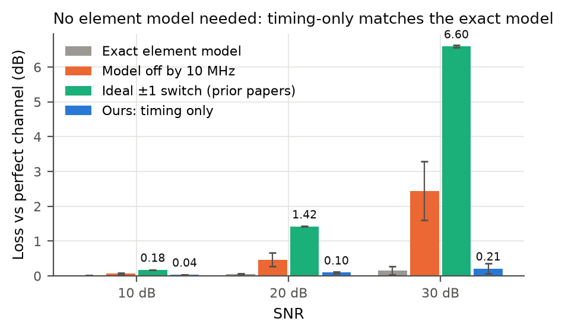
What it shows
Loss compared with perfect channel knowledge, for receivers that assume four different things about the element: the exact model, a model 10 MHz off, the ideal switch used in earlier papers, and nothing (ours, timing only).
How to read it
- Shorter bars are better; 0 dB means no loss.
- Read each group (one SNR) from left to right.
- Error bars are 95% confidence over 30 channels, on a fresh random seed.
What to take away
- Ours needs no element model and loses only 0.04, 0.10 and 0.21 dB, as good as knowing the exact model.
- Assuming the ideal switch, as earlier papers do, costs up to 6.6 dB at 30 dB.
- Even a small modelling error (10 MHz) costs 2.4 dB at 30 dB, so not needing the model is a real practical advantage.
Fig. 4The fair test
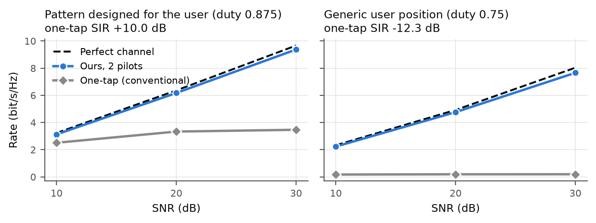
What it shows
Rate against SNR in two situations. Left: the RIS pattern is deliberately chosen to favour the conventional one-tap receiver. Right: a user at a generic position. The SIR in each title is how much stronger the wanted signal is than the leakage, as seen by one-tap.
How to read it
- Compare the grey one-tap line with the blue line (ours) in each panel.
- The left panel is the case most favourable to one-tap.
- Both panels share the vertical axis.
What to take away
- Even when everything favours it (SIR +10 dB), one-tap levels off near 3.5 bit/s/Hz; ours keeps rising to 9.4.
- At 10 dB the advantage is modest (3.13 against 2.51 bit/s/Hz, about 2 dB); it grows with SNR.
- At a generic position one-tap gets almost nothing (0.2 bit/s/Hz).
Fig. 3The full 100 MHz band
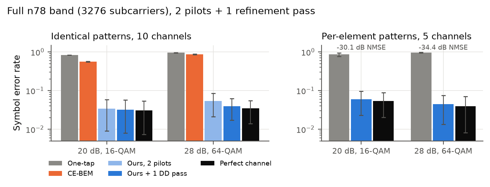
What it shows
Symbol error rate over all 3276 subcarriers of the 5G n78 band, computed without ever building the full channel matrix. Left: all elements share one pattern (10 channels). Right: each element has its own shifted pattern (5 channels).
How to read it
- Log scale: shorter bars mean fewer errors.
- Compare the blue bar (ours) with the black bar (perfect channel) in each group.
- Error bars are wide because channels differ a lot from trial to trial; within each trial ours tracks the true channel closely.
What to take away
- With 2 pilots alone, ours has 1.09× the perfect-channel error rate at 20 dB (16-QAM) and 1.54× at 28 dB (64-QAM). One decision-directed pass brings these to 1.05× and 1.14×. Report both, not just the refined number.
- The literature's estimator (orange) misses 55 to 87% of symbols at this bandwidth.
- The per-element case works too (−34 dB estimation error) after using the cyclic-shift structure; the first attempt failed.
Fig. 9Cost of the equaliser
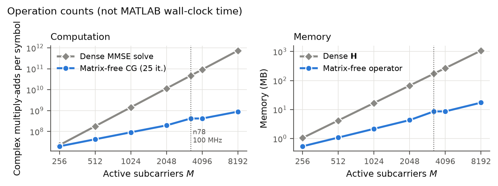
What it shows
How the work and memory of equalisation grow with the number of subcarriers, for the standard dense solve and for our matrix-free method. These are operation counts, not measured times.
How to read it
- Both axes are logarithmic.
- A steeper line grows faster; the dense method grows as M³ for work and M² for memory.
- The dotted line marks the real 100 MHz n78 band (3276 subcarriers).
What to take away
- At the full band, matrix-free needs about 110× fewer operations (4.2×10⁸ against 4.7×10¹⁰) and about 20× less memory (8.6 MB against 172 MB).
- The gap widens as bandwidth grows.
- In MATLAB at small sizes the dense solve is still faster in seconds, so the paper claims operations and memory, not speed.
Fig. 5Longer echoes than the estimator assumes
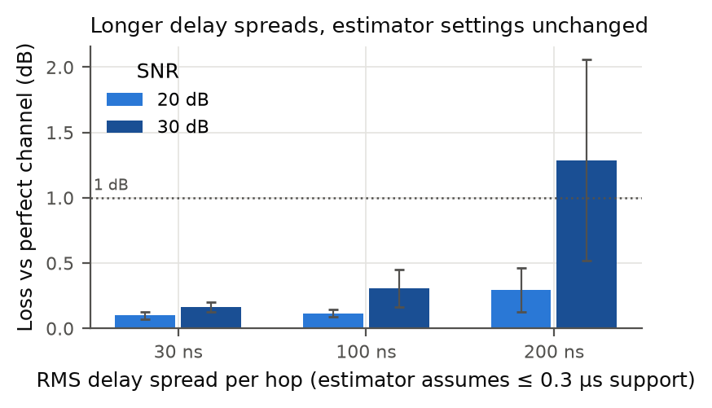
What it shows
Loss compared with perfect channel knowledge when the real echoes are longer than the estimator was set up for. The estimator settings are not changed.
How to read it
- Shorter bars are better; the dotted line marks 1 dB.
- Light blue is 20 dB SNR, dark blue 30 dB.
- Error bars are 95% confidence over 20 channels.
What to take away
- Up to 100 ns delay spread the loss stays at or below 0.3 dB.
- At 200 ns and 30 dB it passes 1 dB (1.3 ± 0.8 dB): very long echoes need a wider delay window in the estimator.
- This is a known, adjustable setting, and the paper will say so.
Fig. 10Do the results depend on the settings we chose?
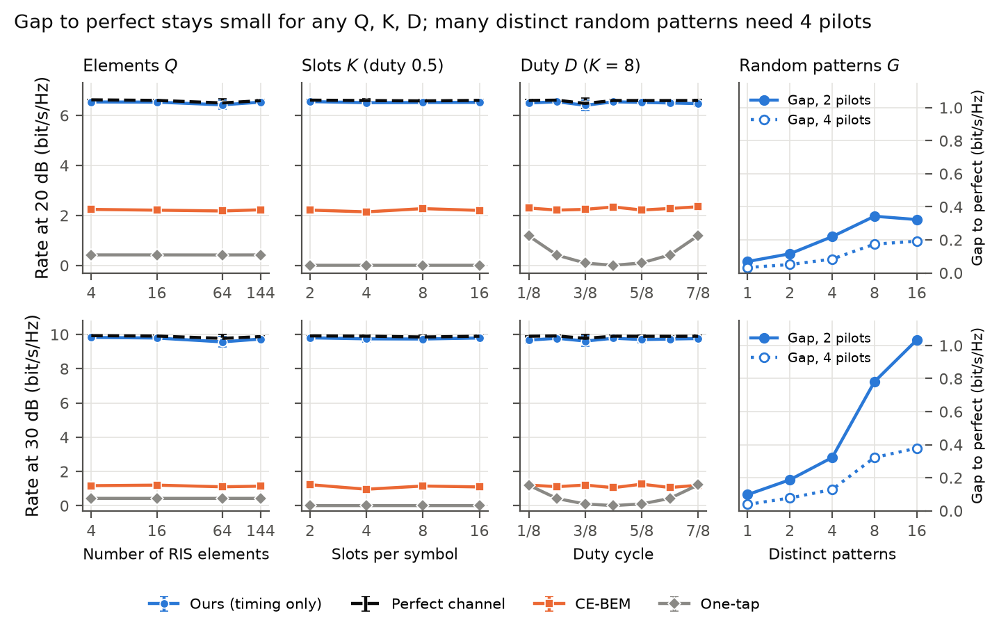
What it shows
Every setting we picked ourselves, varied one at a time around our default (16 elements, 8 slots per symbol, duty 0.75): the number of RIS elements, the number of slots, the duty cycle, and fully random switching patterns where G of the 16 elements' patterns are different from each other. Top row 20 dB, bottom row 30 dB.
How to read it
- First three columns: the blue line (ours) should sit on the black dashed line (perfect) whatever the setting.
- Last column is different: it plots the gap to perfect directly, because each point there used its own random patterns. Lower is better.
- Solid: 2 pilot symbols. Dotted: 4 pilot symbols.
What to take away
- The number of elements, slots and duty cycle make no real difference: ours stays within 0.05 to 0.23 bit/s/Hz of perfect everywhere.
- The literature's estimator and the one-tap receiver stay far below at every setting.
- With many different random patterns the gap grows at 30 dB (up to 1.0 bit/s/Hz with 2 pilots). Using 4 pilots brings it back under 0.4. That becomes a design rule in the paper.
Robustness: what happens when reality is less tidy
The figures above use a clean setup: a still user, perfect clocks, ideal hardware and a short-delay channel. The next eight figures break those assumptions one at a time. Most of them plot the gap or loss against the perfect-channel receiver, so lower is better. Solid lines are 20 dB SNR and dashed lines are 30 dB unless the panel says otherwise.
Fig. 11How long does one channel estimate stay good?
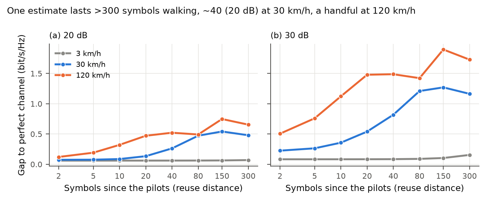
What it shows
The user moves, so the RIS-to-user part of the channel changes. We estimate once from the pilots and then keep using that estimate for later symbols. The x-axis is how many symbols later; the y-axis is the rate lost against a receiver that knows the channel at that moment.
How to read it
- One line per speed: grey walking, blue 30 km/h, orange 120 km/h.
- Read across until the line rises noticeably: that is how often fresh pilots are needed.
What to take away
- Walking speed: one estimate is good for more than 300 symbols.
- 30 km/h: about 40 symbols at 20 dB, about 8 at 30 dB.
- 120 km/h: only a handful of symbols, and less than 2 at 30 dB. Re-estimating that often is costly, which is why Fig. 18 tests cheap updates.
- The Doppler spread inside one symbol is tiny (−60 to −34 dB), so the problem is the estimate going stale, not new interference.
Fig. 12How well must the receiver know the switching timing?
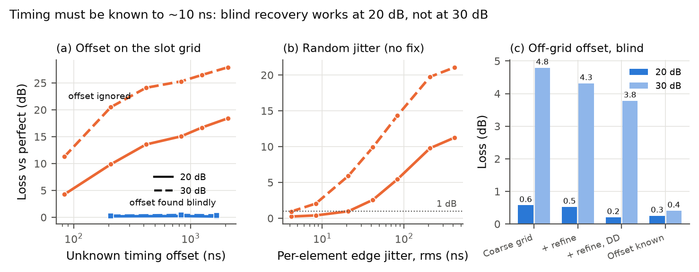
What it shows
Our estimator's one requirement is the switching timing. (a) The RIS clock is shifted by a fixed amount. (b) Every element's switching edges wobble randomly (jitter). (c) The shift is an arbitrary value, not a whole number of slots, and the receiver must find it from the pilots alone.
How to read it
- (a) Orange: the receiver ignores the shift. Blue: the receiver searches for it blindly. One slot is about 4.2 μs.
- (b) The dotted line marks 1 dB of loss.
- (c) Each pair of bars is one stage of the blind search; the last pair is the receiver that is told the offset.
What to take away
- Timing errors hurt badly if ignored: just 83 ns costs 4 dB at 20 dB SNR and 11 dB at 30 dB.
- A shift of whole slots is found exactly from the pilots, with no loss.
- Jitter cannot be estimated. It must stay below about 20 ns at 20 dB and about 4 ns at 30 dB.
- An arbitrary shift is recovered blindly at 20 dB (0.2 dB loss), but not at 30 dB (3.8 dB against 0.4 dB when known). At high SNR the RIS and receiver need about 10 ns alignment. This is a stated limitation.
Fig. 13Imperfect hardware
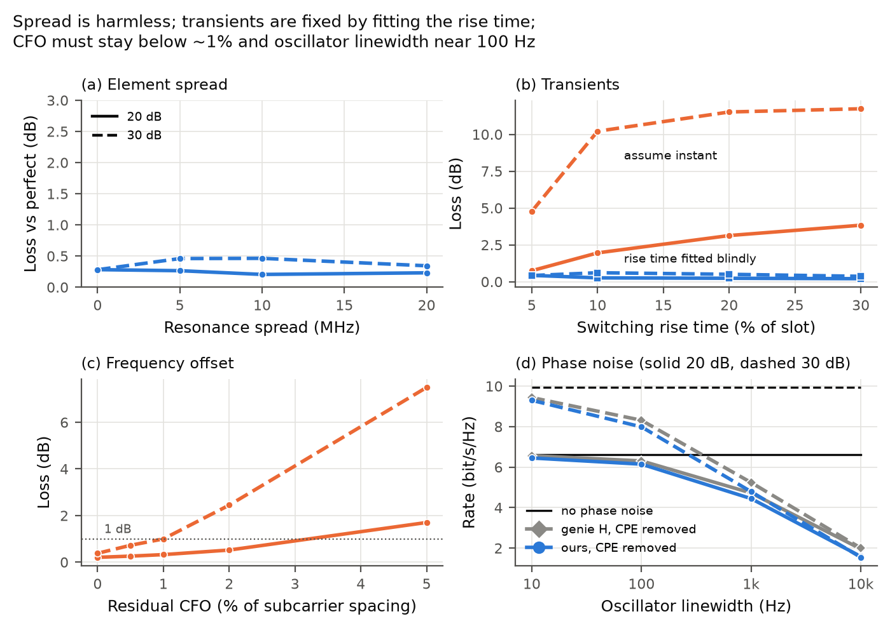
What it shows
Four hardware imperfections. (a) Elements are not identical: each one's resonance is shifted at random. (b) The switch takes time to change state (a rise time). (c) Transmitter and receiver oscillators differ slightly in frequency (CFO). (d) The oscillator phase drifts (phase noise), and the common part of the drift is removed in each symbol, as 5G phase-tracking pilots do.
How to read it
- (a) to (c) plot loss against perfect: orange means nothing was done about the problem, blue means our fix.
- (d) plots rate. Black is no phase noise, grey a receiver told the exact channel, blue ours.
- The fair comparison in (d) is blue against grey: phase noise also hurts a receiver that knows the channel.
What to take away
- Element spread is harmless: the estimator never assumed an element model.
- Transients cost up to 12 dB if ignored. Fitting the rise time from the pilots (no calibration needed) brings this down to 0.2 to 0.6 dB.
- CFO must stay below about 1% of the subcarrier spacing at 30 dB. Standard OFDM synchronisation achieves this.
- Phase noise: ours stays within 0.4 to 1.4 dB of the genie receiver, but everyone suffers above about 100 Hz linewidth. We set a requirement of about 100 Hz, or tracking. The bar set in advance failed at 1 kHz, and we say so.
Fig. 14Standard 3GPP channels
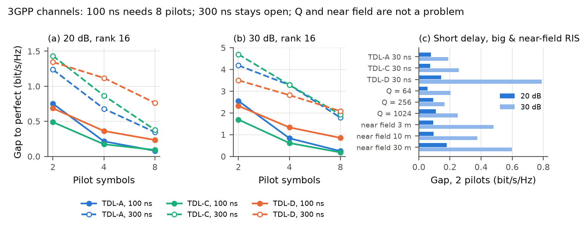
What it shows
The channel models that 5G standard work uses (3GPP TR 38.901 TDL-A, C and D) instead of our own 6-path model. The delay spread says how long echoes last: 30 ns is a small room, 300 ns a large hall or a street.
How to read it
- (a, b) Filled markers are 100 ns, hollow markers are 300 ns. A line falling with more pilots means more pilots fix it.
- (c) Gap with just 2 pilots, for short delay spreads, larger surfaces (up to 1024 elements) and users close enough to the RIS that the wavefront is curved (near field).
What to take away
- At 30 ns, as in the anchor paper, 2 pilots are enough.
- At 100 ns, 8 pilot symbols bring the gap to 0.08 to 0.24 bit/s/Hz at 20 dB (bar passed).
- At 300 ns the gap stays large even with 8 pilots, especially at 30 dB. This is open, and the paper will say so.
- Bigger surfaces and near-field users cause no trouble (gap ≤ 0.2 at 20 dB and ≤ 0.6 at 30 dB).
Fig. 15With a real error-correcting code
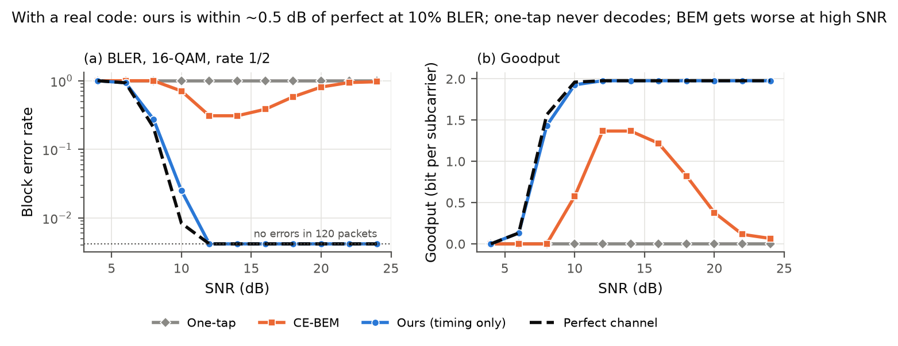
What it shows
Real systems add a code that corrects some bit errors. Here a standard rate-1/2 convolutional code with 16-QAM. A packet (block) fails if any bit is still wrong after decoding. Goodput is the useful data that gets through.
How to read it
- (a) Lower is better. Points on the dotted line had no errors at all in 120 packets.
- (b) Higher is better; the maximum is about 2 bits per subcarrier.
What to take away
- Ours is within about 0.5 dB of perfect at 10% block errors: 2.5% block errors at 10 dB and none from 12 dB.
- The conventional one-tap receiver never decodes a packet at any SNR: interference between subcarriers is too strong for the code.
- CE-BEM gets worse at high SNR (best 31% block errors), because its truncation error, not noise, dominates there.
Fig. 16Giving the competitors every advantage
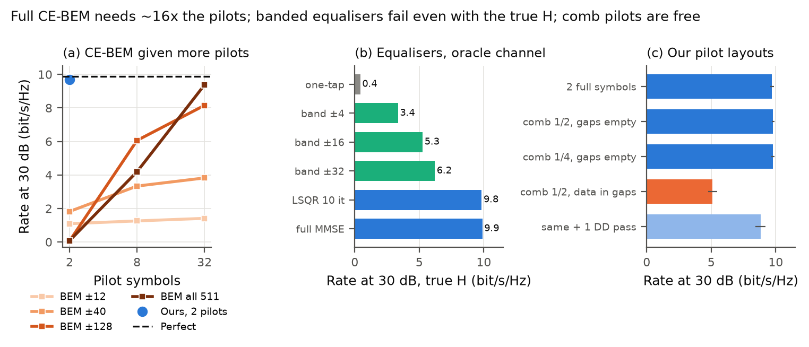
What it shows
A reviewer would ask: did we make the baselines weak? (a) The basis-expansion estimator with more harmonics and many more pilots. (b) Low-complexity equalisers from the literature, given the true channel so only the equaliser is tested. (c) Different ways of placing our own pilots.
How to read it
- (a) Orange shades go from few harmonics (light) to all of them (dark). The blue dot is ours with just 2 pilots.
- (b) Green: banded equalisers that keep only nearby subcarriers. Blue: the iterative solver we use.
- (c) "Comb" means pilots on every 2nd or 4th subcarrier; "DD" is one decision-directed pass.
What to take away
- The full basis expansion does get closer (9.4 bit/s/Hz), but only with 32 pilot symbols, and even then it is 0.5 short of perfect. Ours with 2 pilots is better. This replaces the earlier, too-strong claim that the basis expansion never improves.
- Banded equalisers fail even with the exact channel (6.2 against 9.9), because of the slow 1/h² harmonic tail. 10 iterations of LSQR already match the full solve.
- Comb pilots with empty gaps are as good as two full pilot symbols. Putting data in the gaps hurts, and one decision-directed pass recovers most of it.
Fig. 17Direct path, two RIS panels, interference
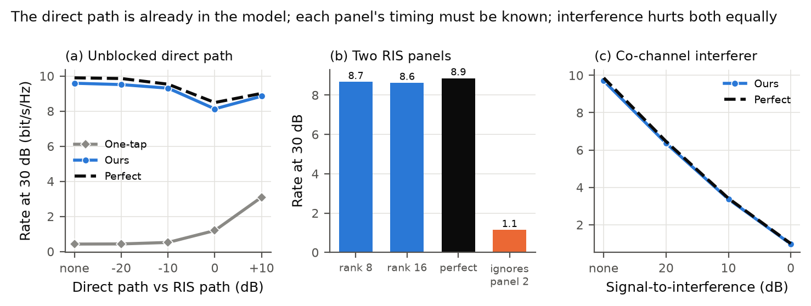
What it shows
(a) The base station also reaches the user directly, not only through the RIS. (b) Two RIS panels with different switching patterns serve the same user. (c) Another cell's signal interferes and is unknown to the receiver.
How to read it
- (a) x-axis: direct-path power relative to the RIS path. "None" is the blocked case used everywhere else.
- (b) The orange bar is a receiver that only knows about one of the two panels.
What to take away
- The direct path needs no extra work: the two RIS states always add up to "on", so the direct path is already inside our model. Ours stays close to perfect at every strength.
- Two panels work if the receiver knows both panels' timing (8.7 against 8.9). If it only knows one, the rate collapses to 1.1.
- Interference hurts ours and perfect equally; it is not specific to our method.
Fig. 18Making channel updates cheap
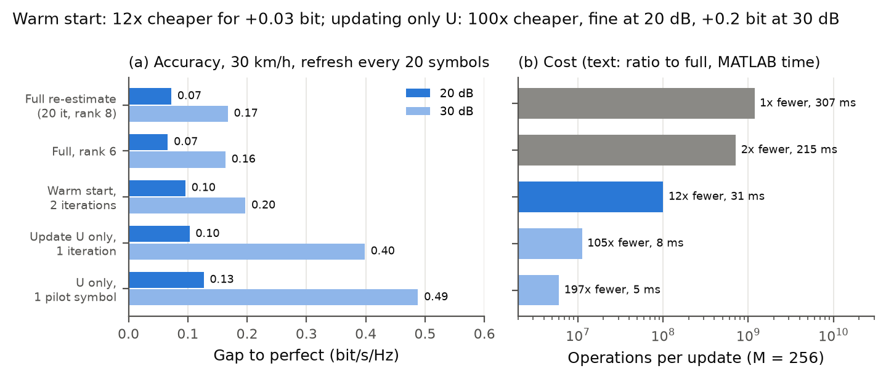
What it shows
The estimator is the expensive part of the receiver, and a moving user needs it often (Fig. 11). Here a user moves at 30 km/h and the channel is refreshed every 20 symbols. A full estimate from scratch is compared with four cheaper updates. Warm start begins from the previous estimate and runs 2 iterations instead of 20. Update U only keeps the factor that describes the base-station-to-RIS side (which does not move) and re-fits only the user side. The last variant also uses a single pilot symbol.
How to read it
- (a) Gap to perfect, lower is better. The top bar is the reference.
- (b) Operations per update on a log scale; the text gives the saving and the measured MATLAB time at 256 subcarriers.
What to take away
- Warm start is the safe choice: 12× fewer operations (10× faster in MATLAB) for only 0.03 bit/s/Hz more gap at both SNRs.
- Updating only the user side is about 100× cheaper. It is as good as warm start at 20 dB, but loses 0.23 bit/s/Hz at 30 dB, so the "static" factor is not perfectly static in our factorisation. A practical receiver can use it between occasional warm-start refreshes.
- Dropping the rank from 8 to 6 saves 1.7× at no cost.
- Measured at 256 subcarriers with 8 trials; the full-band saving is expected to be similar (the iterations, not the start-up, are what is cut) but has not been measured.
Fig. 19How many pilots, how often, and what is left for data
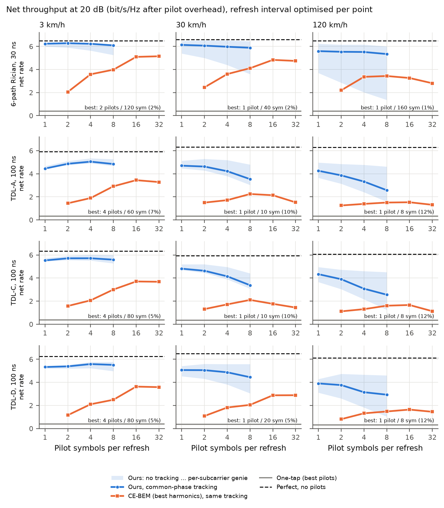
What it shows
Pilots cost time that could carry data. Net throughput is the rate after subtracting that cost: with N symbols per refresh, of which Np are pilots, net = (N − Np)/N × the average rate over the data symbols. For each point the best refresh interval N is chosen. Rows are channels (our 6-path model and the 3GPP TDL-A, C, D models at 100 ns delay spread), columns are speeds.
How to read it
- Higher is better; the black dashed line is perfect knowledge with no pilots at all.
- The solid blue line assumes the receiver corrects one common phase per symbol, as 5G does. The shaded band runs from no correction at all (bottom) to an unrealistic per-subcarrier genie (top).
- The text in each panel gives our best choice: pilots per refresh / symbols per refresh (overhead).
What to take away
- After paying for pilots, ours beats the best CE-BEM in all 24 cases, by 1.1 to 4.8 bit/s/Hz (median 2.7); one-tap stays near 0.4.
- Overhead needed on the realistic TDL channels at 20 dB: 5–7% walking, 5–10% at 30 km/h, 12% at 120 km/h.
- Slow channels with long echoes like more pilots per refresh (4 when walking on TDL). Fast channels prefer 1 pilot refreshed often over many pilots refreshed rarely.
- CE-BEM needs 16–32 pilots to do its best, so its overhead eats much of its rate.
Fig. 20The receiver finds the RIS clock offset by itself
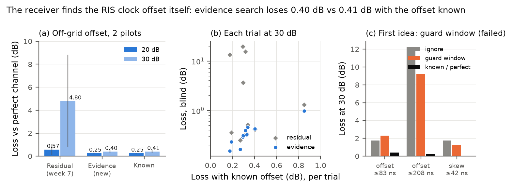
What it shows
Our estimator needs the switching timing. Here the RIS clock is shifted by an unknown amount and the receiver must find it from 2 pilot symbols. Week 7 picked the shift that best fits the pilots; week 8 picks the shift with the highest Bayesian evidence.
How to read it
- (a) Loss against perfect knowledge; "Known" is the receiver that is told the shift.
- (b) One dot per trial at 30 dB: on the dotted line means as good as knowing the shift.
- (c) The first idea, a wider delay window, which failed.
What to take away
- A clock shift is mathematically the same as delaying one hop and advancing the other. A good fit to the pilots is then possible at almost any shift, so fit alone cannot find the true one (week 7 failed at 30 dB).
- The evidence also asks "how plausible is this channel?": a wrong shift needs an implausibly spread-out channel. That pins the shift to about 5 ns.
- Result: 0.40 dB loss vs 0.41 dB when the shift is known. The receiver no longer needs to be told the timing offset. (The evidence tool itself is known in OFDM; the insight and use here are new.)
Correction (22 Oct): the 300 ns results are not valid
The cyclic prefix must cover the delays of both hops added together. Our simulator gave each hop the full 300 ns TDL profile, so the combined echoes last 5 to 7.5 μs, far beyond the 2.34 μs prefix, and the simulator did not model the interference this would cause. Fig. 21 and the 300 ns rows are kept as a record only and are no longer claims.
Fig. 21Long echoes: learn the part of the channel that does not move
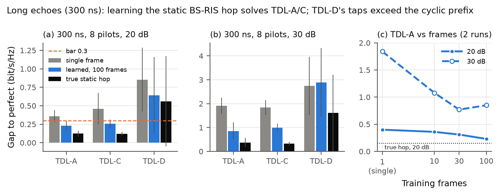
What it shows
At 300 ns delay spread the channel has many more unknowns than 8 pilots can pin down. But the base station and the RIS do not move, so their part of the channel can be learned once from many past frames. Each new frame then estimates only the user's part, about a third of the unknowns.
How to read it
- (a, b) Lower is better. Grey: one frame alone. Blue: static part learned from 100 frames. Black: the static part known exactly (the best this idea can do).
- (c) How the result improves with more training frames (two runs with different random channels).
What to take away
- TDL-A and TDL-C now meet the bar (gap 0.23 and 0.26 at 20 dB, against 0.36 and 0.46 alone), and the 30 dB gap halves.
- TDL-D fails even with the static part known exactly: at 300 ns its echoes last 3.8 μs, longer than the 2.34 μs cyclic prefix. No receiver limited to the cyclic prefix can model that; a real system would use an extended cyclic prefix.
- Learning the static part is a known idea for ordinary RIS; what is new is applying it to the switching-coupled channel.
Fig. 22Measured computing time
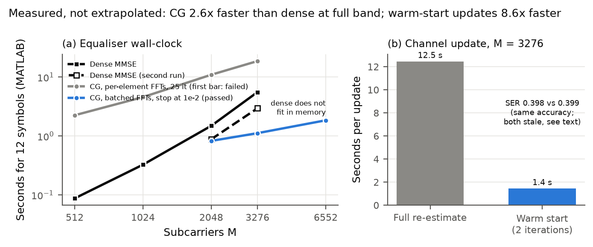
What it shows
Wall-clock time in MATLAB on this laptop, instead of operation counts. (a) Equalising 12 data symbols. (b) Updating the channel estimate for a moving user at the full band.
How to read it
- (a) Lower is better; both axes are logarithmic. Grey: our first, element-by-element version. Blue: the batched version with a stopping rule. Black: the dense solve (two runs; its time varied with machine load, so compare within one run).
- (b) Seconds per update.
What to take away
- The first version was 3.4× slower than dense, a failed bar we keep on record. Batched, it is 2.6× faster at 3276 subcarriers and keeps growing slowly, while the dense solve grows with the cube of the size and does not fit in memory at 6552.
- Starting each channel update from the previous estimate is 8.6× faster with the same accuracy.
- Both estimates in (b) are equally out of date 20 symbols after the pilots, which is why their absolute error rate is high; that is the coherence-time effect explained above, not the update method.
What failed, and why
Failures are part of the result. Each one explains a design choice above.
| Attempt | What happened | What it taught us |
|---|---|---|
| Estimating each harmonic separately (no physics) | Error stuck at −14 to −16 dB with any number of pilots | The 1/h² tail leaves 3 to 5% of energy outside any small harmonic set. Use the known timing to tie all harmonics together. |
| Fixed ridge regulariser | Missed the 30 dB target by about 2 dB | Use an LMMSE prior so a large basis does not amplify noise. |
| Banded sliding-window equaliser | Error floor at 2.5 × 10⁻³ (identical patterns) to 3 × 10⁻² | Same 1/h² tail. Low complexity must come from structure (FFT), not truncation. |
| Several refinement passes at 64-QAM | Full-band error rate rose from 0.057 to 0.24 | Wrong decisions used as pilots bias the estimate. One pass at most. |
| Per-element patterns at the full band (first attempt) | Estimate stalled at −24 to −27 dB, even at 60 dB SNR | The four-block alternating search landed in local minima. Fixed by noticing that a shifted pattern is just a known modulation on both sides, which leaves 8 small unknowns with a convex step: −34 dB. |
| Full two-hop matrix at the full band | Error stuck near −23 to −29 dB at 28 dB | Its unknowns grow with bandwidth squared. Physical channels are low-rank; exploit it. |
| Wider delay window to absorb a timing offset (week 8) | Worse than doing nothing (2.3 vs 1.8 dB loss at 30 dB) | The shifted channel was representable all along; the prior, not the window, was the issue. Led to the evidence search. |
| Decision-directed and Kalman tracking at 120 km/h (week 8) | Worse than simply reusing the pilot estimate | Wrong decisions accumulate after ~10 symbols, and Doppler mixing inside a symbol is not in our model. Fast users need pilots every ~8 symbols. |
| Equaliser speed, first version (week 8) | 3.4× slower than the dense solve in MATLAB | Many small FFT calls are slow; one shared FFT per state fixes it. |
| Two-timescale learning at 300 ns (week 8, found in review) | Looked like a pass, but the simulated echoes were longer than the cyclic prefix | Check the physics of the test itself, not only the result. Withdrawn. |
| "Fallback" step in the estimator (found in review) | Chosen in 37–57% of TDL-C channels at 30 dB, and made the result worse | Choosing whichever estimate fits the pilots best rewards overfitting. Removed. |
| Fixed delay window when the receiver's timing reference is late (review) | Complete failure (20 dB loss) | The window must contain the reference; let the evidence choose where it starts. |
| Our claim "pilot-fit search cannot find the offset" (review) | False: with a fine grid it works when there are two or more pilot symbols | The old failure came from a coarse search procedure. The evidence's real advantages are one-pilot operation and cost. |
| Robust equaliser for a truncated basis expansion (review sanity check) | Still gets worse from 20 to 30 dB | One error-power number cannot describe structured truncation error. |
| First timing run of the equaliser comparison (review) | Ran while another job used the machine | Kept but not used for timing claims; rerun on an idle machine. Iteration counts were still valid. |
Code map
All code is in tm_ris_ofdm/matlab/; numeric results are saved as JSON in tm_ris_ofdm/results/; the running log of decisions is tm_ris_ofdm/README.md.
flowchart TB
subgraph Model["Physics model"]
P1["params_openris.m
element constants"] --> P2["element_response.m
Γ_s(f)"]
P2 --> P3["harmonic_coeffs.m
b[h](f)"]
P3 --> P4["coupling_matrix.m
full H (small M)"]
P2 --> P5["fast_coupling.m
H·x by FFT (any M)"]
end
subgraph Chan["Channels"]
C1["phys_channel.m
shared paths"]
end
subgraph Est["Estimation"]
E1["dpss_basis.m"] --> E2["est_lmmse.m
linear / rank-1"]
end
Model --> Exp["Gate and week-3 scripts
gate1..gate3e, week3_*.m"]
Chan --> Exp
Est --> Exp
Exp --> J["results/*.json"]
J --> RD["README.md and paper/letter.tex"]
| File | What it does |
|---|---|
params_openris.m | The fitted element constants from Iudice et al. (resonances, decay rates). |
element_response.m | Reflection Γ_s(f) of a state at a frequency; also the ideal ±1 and the timing-only indicator variants. |
harmonic_coeffs.m | Harmonic coefficients b[h](f) of a switching pattern (their equation 5). |
coupling_matrix.m | Builds the full matrix H explicitly. Used up to a few hundred subcarriers. |
td_simulate.m | Independent time-domain check: filter, switch, FFT, with no harmonic algebra. |
fast_coupling.m | Lemma 1 in code: H·x and Hᴴ·y by FFT convolutions, exact. |
phys_channel.m | Channels where all elements share propagation paths. |
dpss_basis.m | Slepian basis for delay-limited responses. |
est_lmmse.m, est_rank1.m, est_linear.m | The estimators (prior-weighted, rank-1 per element, plain ridge). |
gate1_reproduce.m … gate3e_dd.m | The gate experiments, in order. |
week3_*.m | Fair-user test, BER, fast equaliser, sequence design, mismatch, full band. |
est_general.m, est_twoscale.m, learn_input_side.m | The timing-only estimator (Algorithm 1, no fallback) and the two-timescale variant. |
est_bem_cg.m | Basis-expansion competitor with no harmonic limit, solved without forming its matrix (agrees with the dense version to 7·10⁻⁹). |
tdl38901_paths.m, cdl38901.m | 3GPP TDL channels with Doppler per tap, and CDL channels with cluster angles (tables in matlab/cdl/). |
week8_*.m | Timing evidence, warm start, equaliser wall-clock, tracking, pilot overhead. |
week9_*.m … week11_*.m | The review tests, one script per pre-registered test (named in results/PREREG_LOG.md). |
figures/make_figures.py, figures/analyse_heldout.py | All paper figures; the selection/held-out overhead analysis. |
To run any script from Windows or WSL:
matlab -batch "cd('C:\Users\hp\RIS\tm_ris_ofdm\matlab'); gate1_reproduce"
Start with gate1_reproduce.m: it is short, reproduces the published numbers, and draws the dispersion and coupling figures in results/.
What is left
- done Per-element patterns at the full band now pass, using the cyclic-shift structure (operator error −34.4 dB at 28 dB; error rate 1.10× perfect at 20 dB). The first attempt, below, failed. first attempt Bar set in advance: operator error at most −30 dB at 28 dB, and error rate at most 1.5× the perfect-channel rate at 20 dB. The error-rate part passed (1.3 to 1.4×), but the estimate stalls near −24 to −27 dB. A follow-up test showed it is not noise (no change from 28 to 60 dB) and not the model (some starting points reach −30 dB): the alternating search gets stuck in local minima. It is now a stated limitation: per-element patterns work at 256 subcarriers, not yet at the full band.
- done Comparison with the literature's estimators, and 10 full-band trials with confidence intervals.
- done Week 8: five limitations attacked with bars set in advance; pilot-overhead study on 3GPP channels; fourth novelty check (no competing receiver paper, five weeks after the anchor paper).
- done Letter and full journal draft (54 pages): pipeline, algorithms, comparison with existing work, every trade-off, limitations.
- done External review, workstreams A to K (summary), except the three items below.
- running Held-out pilot overhead on 3GPP TDL-A, C, D, then the clean equaliser timing. When they finish: update the paper's overhead table, the abstract's "3.9–5.7", and the speed claim.
- not done Over-the-air test with real hardware (K1), a learning-based competitor (C6), and G4. Stated as limitations.
- yours Check the reference author lists marked TODO in
sec_refs.tex, show the draft to your supervisor, and choose the journal.
Limits to state openly in the paper
- Simulation only; the element model is one published cell, and mutual coupling between elements is ignored (as in the anchor paper).
- Larger surfaces (up to 1024 elements) and near-field users were tested and are fine (Fig. 14). The low-rank shortcut matters most there; with 16 elements the channel is only weakly low-rank.
- The receiver needs the switching pattern, not the element model; a constant clock offset is now found blindly (Fig. 20).
- When many elements use different random patterns, 4 pilot symbols are needed instead of 2 (Fig. 10).
- Standard 3GPP channels with longer delay spread need more pilots: 4 to 8 pilot symbols at 100 ns. Delay spreads of 300 ns put the combined echoes beyond the cyclic prefix and are out of scope (the earlier 300 ns results are withdrawn).
- Timing: random jitter of individual switching edges cannot be estimated and must stay below about 4 ns at 30 dB (20 ns at 20 dB); ordinary clocks have picosecond jitter.
- Hardware: switching transients are handled by estimating the rise time; residual carrier-frequency offset must stay below about 1% of the subcarrier spacing; oscillator phase noise must be low (linewidth below about 100 Hz) or tracked, as 5G does.
- Fast vehicles (120 km/h) need a pilot every ~8 symbols (12% overhead on TDL channels at 20 dB, Fig. 19); two tracking receivers failed to do better, and at 30 dB the Doppler mixing inside each symbol, not in our model, limits every receiver.
- Every mobility number assumes the receiver tracks the common phase drift, as 5G's phase-tracking pilots do; without it, pilots are needed about twice as often.
- The estimator is the expensive part; warm-start updates are measured 8.6× faster at the full band (Fig. 22).
- At 10 dB SNR the gain over the conventional receiver is modest (about 2 dB).
- The fast equaliser is 2.6× faster than the dense solve in MATLAB at the full band for 12-symbol blocks, in its batched form, with 16–20 iterations at tolerance 3·10⁻³. Against a dense matrix factored once and reused over long blocks it may lose (being re-measured); its memory advantage stands.
- A switching RIS does not beat a static RIS set for one user (1.3–3.7 bit/s/Hz less at 20 dB); the receiver reduces the cost of switching, it does not make switching pay.
- With perfectly sharp switching edges the emission outside the band (36.8 dB ACLR) is above what base stations may emit (45 dB); edges of 0.05 slot fix this but shrink our lead over simpler estimators.
- Secrecy depends on the switching pattern staying secret.
Glossary
- OFDM
- Splitting a wide channel into many narrow subcarriers sent in parallel.
- Subcarrier
- One narrow sub-channel; ours are 30 kHz apart.
- Cyclic prefix (CP)
- A copy of a symbol's end placed before it to absorb echoes. Iudice et al. showed it must also cover the element's memory.
- RIS
- Reconfigurable intelligent surface: a panel of electronically adjustable reflectors.
- Time-modulated RIS
- A RIS whose elements switch state periodically within each OFDM symbol.
- Harmonic
- A frequency-shifted copy of the signal created by periodic switching; harmonic h shifts by h subcarriers.
- ICI
- Inter-carrier interference: energy from one subcarrier landing on another.
- Dispersion
- The element's reflection changing with frequency, because it is a resonant circuit.
- Toeplitz matrix
- A matrix whose entries depend only on the distance from the diagonal; multiplying by one is a convolution, doable with an FFT.
- One-tap equaliser (TIN)
- Today's receiver: one complex number per subcarrier, treating leakage as noise ("treat interference as noise").
- MMSE equaliser
- The best linear receiver; it uses the whole coupling matrix.
- Matched-filter bound
- The rate you would get if all of a symbol's spread energy were collected with no interference; an upper limit.
- Pilot symbol
- A known OFDM symbol sent so the receiver can learn the channel.
- LMMSE estimate
- A channel estimate that weighs the data against prior knowledge of what channels look like.
- DPSS (Slepian) basis
- The best small set of smooth vectors for describing responses whose echoes all arrive within a known time.
- Low rank
- A matrix that can be written as a product of two thin matrices, because only a few paths exist.
- Conjugate gradient (CG)
- An iterative solver that only needs matrix-vector products.
- Decision-directed refinement
- Re-estimating the channel using detected data symbols as if they were pilots.
- NMSE
- Normalised mean-square error of an estimate, in dB; −30 dB means the error energy is 1/1000 of the signal energy.
- SER / BER
- Symbol and bit error rates.
- Kill criterion
- A pass/fail threshold fixed before an experiment; failing it stops or narrows the work.
Reading list
- Iudice, Darsena, Gelli, Galdi, Physically consistent modeling of dispersive time-modulated RIS for wideband OFDM (arXiv, Sep 2026). The anchor paper. Read sections II and III and the conclusion first.
- Xu, Petropulu, Time-modulated intelligent reflecting surface for waveform security. Why people time-modulate a RIS at all.
- Tao, Petropulu, Secure time-modulated IRS via generative flow networks. A recent design that treats the leakage as interference.
- Tao, Xu, Petropulu, How secure is the time-modulated array-enabled OFDM directional modulation?. The blind attack that assumes the ideal Toeplitz shape.
- Zhang et al., Space-time-coding digital metasurfaces (Nature Communications, 2018). The physics of steering harmonics with timing.